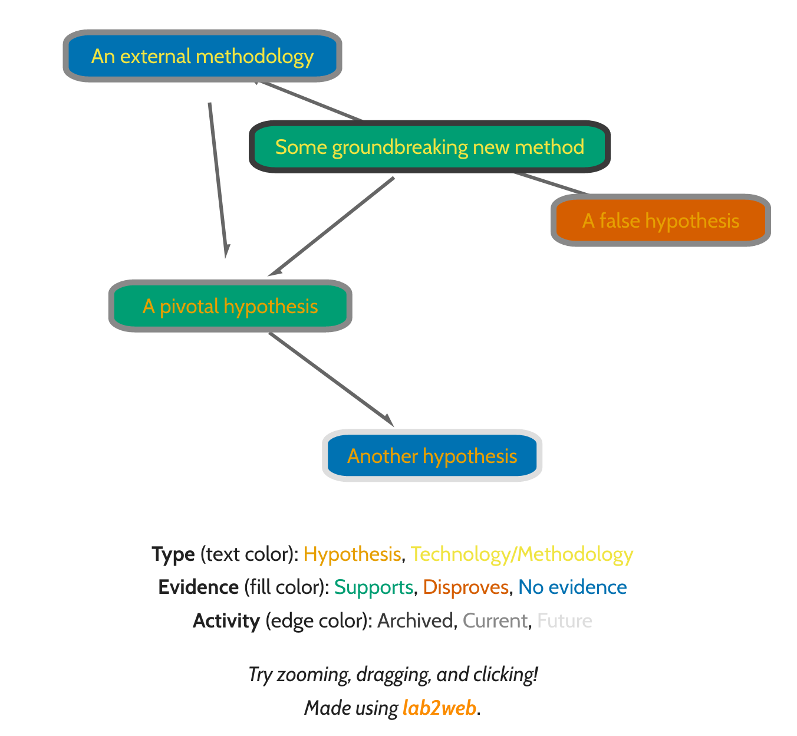

lab2 (labSquared) is an imaginary lab handbook.
A science manifesto, a thought-experiment on doing experiments, an exercise exploring possible futures for science and research.
It is run byPablo Cárdenas, a grad student at MIT Biological Engineering at time of writing.
Why does a grad student make a fake lab website?
- because scientists themselves are increasingly voicing and listening to critiques about the way science works, and the time is ripe to join the conversation
- because many of the problems identified can be solved by listening more closely to science trainees (and a broader audience in general)
- because not being in a head-of-lab position gives freedom to experiment without compromise
- because if trainees wait to be in a position where we can run our own labs, we may never get the chance to contribute our thoughts
- because this can be a reminder to myself and others, if we do end up running anything in the future
What can I do with lab2?
Read it. Share it. Comment on it. Cut it apart into bits and pieces. If you are intrigued by any one part of it and are in a position to do so, take it for a spin. Make your own modifications. Contribute your feedback.
The idea of making lab2 entirely hypothetical is in part necessity, but also deliberate: as an imaginary research group, it can advance proposals (occassionally controversial to some) in all fronts at the same time. However, no single real group or individual is likely in a good position to do the same. In fact, perhaps it is desireable to spread out different proposals across labs, in order to evaluate their merit separately. Nevertheless, the more attempts at implementing its pieces, the more data points we have for a robust answer. I encourage you to innovate any time you can.
On the other hand, many (if not most) of these proposals are not innovative in and of themselves. They come from the work of multiple people and have often already been the subject of intense scutiny, occasionally even implementation. I do my best to acknowledge those efforts where I am aware of them, and I return to update this work as I become aware of more. Unfortunately, this work is not born of a meticulous bibliographical search.
A print-friendly format of lab2 is availablehere (thanks, mkdocs-combine!).
labSquared by is licensed under a .
The website content code is MIT Licensed. The actual website is generated using Material for MkDocs and MkDocs.
Philosophy
We have already establishedwhat lab2 is and why it exists. If lab2 is an imaginary lab and this work is its imaginary handbook, we must now establish what is meant by lab, what its purpose is, and how the handbook is organized.
The laboratory
Laboratories and research groups are the operational unit of science today. This has not always been so, and we can debate the merits and shortcomings of this reality, perhaps even in this venue. However, institutions in charge of organizational and economic supporting science have been put into place in such a way that laboratories, in one form or another, appear to be the present and foreseeable future of scientific research. The laboratory has produced valuable science and scientists and continues to do so, and more importantly, its definition has changed over time and across fields, and continues to do so, spanning the breadth from two-person teams in a single room to hundreds of people in different countries. A laboratory, defined as loosely as possible, is a group of researchers united by a common set of research problems and/or methods. The laboratory is not contingent upon any specific members (labs in the US academic tradition frequently take their name from their principal investigator, but other traditions take names from their topics of research). In fact, member turnover results in people of different levels of expertise simultaneously being part of the lab, making training an integral part of any laboratory’s function.
The flexibility and malleability of the term, its historical success and current use, and the fact that it acknowledges the inherently collaborative nature of research, are the reason why I choose the lab (or research group, according to your field) as a starting point.
Next, we face the task of building and organizing it.
Mission
lab2 is a hypothetical academic research lab. Some of its objectives and practices may not align with labs in institutions with different missions, such as industry or government. However, many of them probably will, and besides, members of industry, government, and other institutions of science will probably be trained in academic labs. Perhaps others will port its resources into some of these other settings.
As a lab, lab2 aims to advance science and knowledge. This can mean different things to different labs. As an academic lab, its first mission is to train others in advancing science and knowledge. The best way of doing this is, of course, by producing science and knowledge of high quality through research. However, the role of lab2 in the advancement of science is the training of new scientists first and foremost. Naturally, trainees themselves are not expected to exercise science in academia, or any other institution, after their passage through lab2.
Lessons from biology
When asked, I tell people I am a biologist by training. What this means is that I am trained to think about things under the lens of evolution, understanding function through structure, examining interactions across different scales. I do not claim this approach to understanding is better than any other, but I do believe it has advantages. It provides a useful framework for understanding complex phenomena, and a benchmark to explain them with through tangible analogy. A lab is, in many ways, very much a living thing. For this reason, the ideas comprising lab2 are organized in a scheme that takes cues from biology. I hope this strategy results in piquing readers’ interest more than shunning researchers in other fields.
It is important to state clearly that although I draw on biology for inspiration and organization, I do not imply that these arguments are correct because they rest on biology. They should be judged based on their merit as guidelines for a research lab, run by people (not bacteria or fruit flies) in a complex society, in a complex world.
Principles
Labs, like other living things, operate on many different levels of interactions, from the micro to the macro. These levels are used to organize the operating principles of lab2, and include:
- Composition: elements and roles constituting the lab and how they are organized
- Metabolism: inner workings of the lab that advance research
- Growth: practices ensuring research results in teaching, training, and mentorship
- Ecology: interactions with actors tangential to research
Additionally, as in other biological systems, certain transversal themes permeate these levels of organization. These include
- Replication: lab2 trains scientists (for a variety of scientific roles), as explained above
- Transfer of genetic information: an integral part of scientific practice is transparent communication of its own practice
- Structure following function: lab2’s organization is deliberate and reflects its core values
- Diversity: by expanding the range of peoples involved, we build a more resilient, adaptable scientific community
- Evolution: as any lab or living system, lab2 is continuously evolving
Paraphrasing Theodor Dobzhansky, no living system makes sense if not in the light of evolution. The evolution of lab2 is tracked on a GitHub repository, as the content is written in Markdown. Whether you do or don't run a lab, you are encouraged to fork it, re-hash it, copy pieces or be inspired by any part of it.
Composition
The makeup and structure of lab2 reflects its mission. Diversity, clear communication of expectations and interests, and balanced, distributed governance are built into lab2 to help foster a healthy research environment.
Diversity
Diverse communities are better equipped to adapt to change and solve unexpected problems. lab2 encourages diversity and understands its resilience as a community depends on its diversity.
Diversity comes in many different forms. Among others, it can refer to diversity in training, level of expertice, interests, academic, economic, social, and geographical background, race, gender identity, and culture in any form. As all these are aspects of the world we live in, and lab2 inhabits the world, diversity in all of them is desireable. By increasing the breadth of our experience pool, we increase the breadth of problems we are aware of, questions we can tackle, and people we can communicate to. Diversity is at the core of our mission as scientists.
To capitalize on diversity, lab2 must learn to recruit on it. Many mechanisms have been put into practice to this end, but some guidelines can point in the right direction, regardless of your own background and current position. One possible guideline is making sure you select for convergent evolution, not co-occurrence or drift. Sometimes, irrelevant traits spread in a population due to their random co-occurrence with successful traits, or their already increased prevalence within the population. However, if a trait is truly successful, it will evolve separately multiple times. This is known as convergent evolution. The best way of making sure a trait is worth selecting is if you see it across successful individuals from multiple unrelated backgrounds.
Identify what qualities of your experience have allowed you to progress to your current position, and actively seek out individuals who show those qualities in radically different backgrounds. Radically different refers to differences with respect to the current population in lab2, the fields or institutions you work in, or research and science in general. This should be kept in mind by lab2 members in any level of selection committee, from graduate students selecting undergraduates interns to faculty on institutional leadership searches. Finally, listen and engage with your community on these manners: no individual is diverse without a context for it to manifest in.
Organization
Academic labs such as lab2 are complex ecosystems that house members in many different positions. These can include (in no particular order) principal investigators (PIs, or group leaders, according to your field), administrative assistants, dedicated funding or scientific writing staff, lab managers, technicians, research associates, senior scientists, undergraduate and graduate students, postdoctoral researchers (postdocs), visiting researchers ranging from high school intern to visiting professor, and participant-observers and collaborators of different kinds, such as anthropologists, artists-in-residence, and institutional or governmental regulators. People in these positions may be part of the lab for a day or a lifetime, and individuals may occupy different positions in the same lab throughout their career or at once.
It is customary to think of these positions in the lab in terms of their roles and responsibilities. However, a more nuanced understanding could be to think of their interests. Trainees such as students or postdocs are usually interested in acquiring the tools and credentials necessary to continue their scientific career, wherever that may lead them to. Principal investigators are usually interested in ensuring the lab’s continuity. However, in the same way that cells in different tissues work in concert to achieve growth and reproduction, a common interest of all lab members is effective function towards the lab mission, which at lab2 means advancing trainee interests.
Focusing on interests rather than roles carries the advantage of clearer expectations for lab members. For instance, technicians fulfilling similar roles on paper could see their current position as a stepping stone to grad school or as a long-term position with room to grow in and flourish as a career staff scientist. The expectations, requirements, and advantages of each are very different, and entail different relationships within the lab. In this way, roles evolve to follow interests.
This strategy implies members of lab2 in all positions communicating their interests as they become clear and change with transparency. Achieving this is not necessarilly easy, but carefully designing the lab’s operating structure can help do so.
Governance
Unfortunately, dependencies between the interests of lab members holding different positions are often asymmetric, leading to asymmetries in power. These asymmetries, which are particularly entrenched in the hierarchies of academia, can make candid communication difficult. To minimize this problem, lab2 aims to flatten its hierarchies at the level of all decision-making.
Periodic lab meetings dedicated to lab business proceed with lab members summarizing any developments that require decisionmaking as a lab. Decisionmaking as a lab happens for any matter that exceeds a single lab member’s resources in terms of time, money, expertise, or other factors. It includes, among others, new member recruitment, funding acquisition, equipment purchases, budget distribution, collaborations, research directions, publishing, authorship, recommendations, and lab practices and guidelines themselves. Ideally, lab2 is of a size small enough for desisions to be made by unanimous consensus, product of continued debate. Super or simple majority can be used when consensus fails, and the PI(s) can arbiter tie-breaks.
As this is not the traditional way of running a lab, some clarifications may be useful. First, as we have already discussed above, it is understood that lab members have different interests. Participation in decisionmaking is always welcome, but not compulsory nor expected. Second, this method of decisionmaking is not meant to deny the differing levels of experience and expertise of different lab members. Rather, it is a pedagogical opportunity for less experienced members to learn on the job with guidance from more experienced ones through discussion. PIs, given the nature of their interests and experience, probably are in the best position to participate and offer guidance in all decisionmaking.
The success of a scheme such as this hinges on its generalized implementation. By distributing decisionmaking power across lab members, fear of retribution from any given member (including PIs) is diluted to a degree where earnest communication and participation is possible. Crucially, this includes letters of recommendation, which are drafted with input from the lab as a whole (save, of course, the member being recommended). Outside resources for conflict resolution available at the institution are pointed to as valuable points of contact for matters that require them.
By taking advantage of democracy in governance, lab2 can build a more balanced organizational structure, allowing for more diversity and better ability to diagnose, solve, and communicate problems of science and society. Furthermore, transparency in governance fosters an environment in which ethical practices in management and scientific research are passed down to members as part of their scientific training. In fact, transparency in governance (as well asresearch practice) fosters an environment in which ethical decisionmaking is more likely to happen in the first place.
Metabolism
The central engine of a research group or laboratory is, unsurprisingly, research. Regardless of whether or not producing new knowledge is the direct objective of lab2, research is the means to all of its ends. Much like an organism's metabolism, research consists of a complex network of interacting elements being progressively transformed, refined, and transported in different ways according to purpose. Establishing how knowledge is produced and communicated is a central part of lab2's vision of science.
Incentives
There is no single right way of doing research, and valuable work has been done both in private,for-profit labs (andeverything in between. That being said, academic research is a truly unique system in that researchers are paid salaries for the act of researching, not for delivering its products (at least for the most part). Critics argue (often correctly) this is part of the reason why research tends to move at a faster pace in industry, but this model offers three key benefits, at least in principle.
- It grants researchers freedom to explore fields and areas that may not be in high demand by the market, areas benefiting populations that cannot influence the market, or areas that may not be directly applicable at all at this time.
- It allows researchers to more meticulously review and confirm their results.
- It allows the products of research to be made publicly available to all.
Industry may in fact advance at a faster pace, but it would have far more ground to cover were it not for the groundwork of generations of academic scientists making knowledge available to all. In addition, making knowledge publicly available is particularly valuable for those researchers working at the geographic or academic periphery of the world's central research hubs, where first-hand, in-person expertise in a given specialized technique or area of knowledge might be hard to come by. In this regard (though possibly not others), academia acts as a de-centralizing force. Thus, the benefits of academic research are valuable and we must endeavor to protect them.
On the other hand, accelerating the pace of science and ensuring public funds are being used efficiently are desirable objectives as well. For reasons like these, academic institutions condition career progression upon research output (hopefully among other things, asacademic researchers often wear many hats). This places researchers under pressure to maintain a certain pace of research and publication, something science should strive for anyway. Unfortunately, it also results in certain disadvantages. For starters, pressuring academic output undermines the second benefit of the academic model outlined above to some degree, resulting in potentially lower quality research being published. Furthermore, it increases pressure to publish high-impact research that is likely to cause a stir, which often results in bottling up significant amounts of effort until enough has been accumulated to be able to publish in a prestigious journal. This results in research groups competing and racing against each other to publish the same large body of work. Bottling up research runs contrary to the natural, gradual course of scientific procedure. By making research advances available to all in a more timely manner, efforts can be pooled, more actors can be involved, and science can move more rapidly and efficiently.
Research
The Internet allows instantaneous, nearly cost-free sharing of information, something unthinkable in the early days of modern science. To stay true to the fundamental goals of academic research and maximize the benefits it offers, lab2 conducts research in a completely transparent way, taking advantage of the platform offered by web technologies. The lab's ongoing research and methodologies are made available and updated in real time on the lab website.
Research webs using lab2web
One possible way of presenting this is using an interactive mental map scheme such as the one shown below (may require updated browsers):

To make these kinds of mental maps using a plug-and-play standard input file, check out lab2web.
Nodes on the map contain lines of research in the lab, with text color denoting research hypotheses or methodological/technology development. The color of a node denotes a hypothesis or technology's status as supported by evidence, disproven, or lacking enough evidence for a conclusion. Finally the border type signals a node's status as archived, current, or future line of research. Clicking on a node can present the evidence for or against the hypothesis or technology according to the lab's research, and link directly to the data and methods, protocols, and code used to acquire and analyze it. Data, protocols, and code are stored on a public, version-controlled repository such as GitHub, which allows easy tracking of where and when changes were made. Nodes are connected by directed edges, symbolizing logical or procedural dependence between different hypotheses and technologies. Tightly connected clusters of nodes can signal a unit publishable as a research article.
Clearly, science as a whole would benefit from open research practices such as these: other labs anywhere in the world could learn from the techniques and guide their own research questions according to recent, unpublished findings (with the caveat that they remain preliminary unless stated otherwise). However, lab2 operates on the hypothesis that transparency in research also benefits the individual lab practicing it. Concretely, the lab2 believes that clear signaling of research intentions and progress results in more collaboration, faster independent confirmation of good data, and more frequent correction of flawed data than it will result in "scooping", or other researchers taking promising research directions on their own and independently publishing the results in a peer-reviewed journal before lab2 does. Of course, as with everything else in lab2, this is a hypothesis that needs empirical testing. However, the success of preprinting, first in physics and now in most other branches of science, shows that similar practices can not only allow research to thrive and flourish, but coexist with current practices and structures of research, funding, and publishing.
Publishing
Making the small steps of research public instead of bottling them up to make for a massive release can bring much good to science. Nevertheless, this is not to say that publishing large collections of work is redundant or unnecessary: review articles are invaluable resources that collect the advances in a field and condense the evidence and status of higher-order models and theories. This also does not mean that journal research articles should be done away with: writing and submitting a research article constitutes a benchmark for what the authors consider to be sufficiently confirmed knowledge, and publishing in a journal signals that other researchers agree, through peer review. These are important aspects of research practice, and although neither one strictly requires a journal, journals provide useful venues to implement these aspects in. Journals can be valuable assets as long as they contribute to effective vetting and communication of science. Science is like advertising, as is said by SOMEONE (quoted by Peter Sorger): you get paid to make your work, not sell it, and then offer it to the widest possible audience for free. Scientific publishers, when doing their job right, can help advertise your work in this way.
The logical way of publishing to a wide audience is removing paywalls and other barriers of access. At lab2, making completed research available through open access publishing is fundamental. More and more publishers, funders, and authors have joined the ranks of the open access movement one way or another, althoughthe road to achieving this has certainly not been a smooth one and publishing parallel, archived copies of pre- and post-print research ("green" open access)are both perfectly legal and highly helpful practices that can coexist and complement one another,biorXiv and many others have taken the scientific world by storm, withclear benefits for both the authors and their readers, will eventually lead to a fundamental shift in what a journal is and what it does. But it is both encouraging and reassuring that we do not need to burn the current system to the ground before we implement a new one. These kinds of shifts in the role of scientific publishers have already happened organically in the past, with both the arrival of peer-review to publishing in the seventies (much more recently than many people realize) and with the publication and media revolution that has been brought about by the Internet, online databases and search engines.
Leaving a door unlocked certainly allows more people to walk through it, but it does not really mean more people will. One must also show people to the door, open the door for them, and help them walk through it if necessary. Communicating science, both within science itself and toactors tangential to it, is an active affair. Engaging audiences at conferences, via email, and even through social media can help advertise the lab's research. Social media such asScience Twitter. Science is set in motion if knowledge is used, and knowledge must be actively made available to all to be truly known.
Growth
In the same way that an organism carries out metabolism to ensure its growth, lab2 researches with the goal of educating new scientists. An integral part of scientific practice is making sure it is carried on by others, ensuring its growth as an institution. Education at an academic institution such as the one where lab2 resides in commonly comes in two forms: mentoring of lab members and teaching in a classroom setting. The question of what to educate new scientists on is transversal to both of these pedagogic settings.
Mentoring
Research is very much a craft. This has important consequences for the training of new researchers. Centuries of technical and methodological advances in education have resulted in a plethora of pedagogical techniques, from in-person tutoring to Massive Online Open Courses (MOOCs). However, professional training as a researcher today—particularly in the experimental sciences—is in many ways similar to trade apprenticeship of centuries past. A research lab is more akin to a Rennaissance painter workshop than a modern office bureau. This is not necessarily undesireable: it is a consequence of the artisanship involved in operating complex equipment, fickle technical procedures, or human methodologies, conflicting against an emphasis on reproducibility. These are all things we want and, in fact, need in science. It also means training in research is especially prone to inequalities in access according to geography (among other things), which is why efforts must be done to tackle issues ofdiversity. Regardless, the fact of the matter is training as a researcher and scientist unsurprisingly requires close contact with the work of researchers and scientists. This is part of the reason for lab2’stransparent approach to self-governance, but as we just established, training goes much beyond decisionmaking, even down to the nitty-gritty of fine motor skills. Mentorship in science is ubiquitous, multidirectional, and of vital importance.
Despite lab2’s overarching mission of training scientists, it is important to recognize the differing interests and expertise of different actors in the lab,as we have done before. As the first individuals interested in the success of the lab mission, PIs are the first responsible for ensuring successful training and professional development for all lab members. Advising relationships can include all kinds of aspects, since PIs usually have the most career experience in a lab. For this reason, PIs at lab2 take steps to guarantee the availability of honest, two-way communication with trainees.
However, PIs are often not the best suited people to advise a trainee in certain aspects: perhaps they lack firsthand experience in a recently-developed technique, or are unfamiliar with career paths outside academia. Because of this, it is crucial for trainees to have access to multiple sources of mentorship, both inside and outside the lab. In fact, evidence point to senior lab member mentorship, not direct PI mentorship, as the most important factor determining future career success for trainees.
Since mentorship can come from different lab members (and non-members) for certain skills, a successful training environment implies comfortable communication between all lab members and easy access to outside mentorship if needed. A crucial duty of PIs is actively ensuring that this is the case. This can be done by creating theforums and spaces for communication to occur, giving them real weight, reinforcing constructive interactions within the lab, empowering trainees to reach out beyond the lab when needed, and clarifying the channels and procedures to do so. Furthermore, lab member recruitment should take into account an individual’s commitment to making training of other lab members part of the job. In fact, providing technical training should be an explicit item on the job description for a member of lab2 acting as Lab Master, to use the Rennaissance workshop analogy once more. If the PIs are not in a position to do this, it could perhaps be of interest to a non-trainee such as a staff scientist or technician, to avoidconflicting interests with senior trainees such as postdocs looking to move on.
Teaching
Academic laboratories commonly reside in universities, where different lab members hold appointments as professors, teaching assistants, and/or students. Teaching courses is a complex activity in and of itself, with a specific skillset that does not overlap perfectly with those of research and mentorship. As such, it deserves its own dedicated work, which this project does not pretend to be.Numerous others have given teaching the attention it warrants elsewhere.
In spite of this, teaching is mentioned here because it is an integral part of academic posts and science as an institution. At lab2, it is understood that members engaged in teaching duties of any kind dedicate significant effort to their practice. Collecting and providing easy access to teaching materials and training is highly important, and should be done in the same way research data and methods are collected and provided. In addition, incorporating lab research into teaching is a valuable opportunity for both organizing and reflecting on the material being produced in the lab as well as advertising its value beyond the lab.
Material
The question that now remains is, what should lab members teach and train for? What does it mean for lab2 to be training scientists? The answer of course includes a series of contents and methods used to carry out the lab’s research, but as has been emphasised repeatedly in this work, it must go far beyond this. Science is a verb, and as a verb, it encompasses not only the production of new knowledge but its effective communication, critical evaluation, and justification as a social endeavor. Specific contents and methods, as important as they are for the lab’s research, are only excuses and specific examples for this broader scientific education. Scientists must be trained in critical reading, technical and non-technical writing, and communication skills with people across all kinds of different professions. Fortunately, this is increasingly recognized even at the institutional level, and many excellent resources have been developed to this end.
Ironically, for all its traditional importance, perhaps we are now falling behind in the teaching of knowledge production. The contents and methods of science are often narrated as a straight line of successful experiments and hypotheses, both in the classroom and in publications. Obviously, this is not true, and nobody in science would expect it to be. If we teach and mentor in failure, show what bad data looks like, how to check for it, what to do about it, and expose the extent to which it happens, we are better equipping scientists to identify it and setting realistic expectations for scientists and non-scientists alike. This handling of expectations is vital given the challenged perception of scientific knowledge in certain social and political environments, and science’s own problematic bias against negative results.
Ecology
Science comprisesproduction and communication of knowledge, and requirestraining new scientists in its practices. However, science also requires frequent interaction with actors external to its practice, ranging from funders and policymakers to the individual citizens that elect them.
Funding
One of the most frequent and direct ways in which scientists engage with non-scientists is through funding acquisition. Whether at a startup or in an academic lab, researchers regularly package their work for people outside their field of study, in order to justify its economic sustenance. This underscores the importance of communications skills within the scientific curriculum,as we have touched on before. Explaining the importance of our work in order to raise the money needed to conduct it is not an unfortunate extra step of a backwards system, but a duty owed to the society science is a part of. In fact, it is an inherent part of communication of science, and thus of scientific practice itself.
That being said, there are multiple aspects of the current scientific funding scheme that can be problematic. One of them in which the lab has a relatively high degree of autonomy is the source of funding. Taking money from specific funding sources (both private and public) can be interpreted as legitimating or even advancing some of the funder's agendas, hidden or overt. In certain cases, this can be easily recognized asimmoral and patently against institutional rules, and results in a strong, clear backlash, is completely transparent, horizontal debate of funding decisions. The wisdom of the crowds can easily help avoid those cases that are clearly egregious, while at least providing some degree of legitimacy and accountability to those that are more difficult.
There are multiple other ways in which funding practices can pose problems for science. Even though a lab has the last say about whether or not to accept funding from a source, the number of funding sources available (and the amount of funding itself) can be dismal for some scientific fields and in certain geographic and political settings. In addition, the criteria used to fund certain projects over others can lead to conflicts of interest, twisting the kinds of research being done and the way the results are portrayed. Unfortunately, these problems go beyond what any single lab can solve. Nevertheless, lab2 can lend its voice to their solution, as explained next.
Advocacy
There are many institutions whose main job it is to shape and guide policy. lab2 is not one of them. Individual lab members serving on committees involved in selection or advising processes for funding or policy can contribute to the solution of issues in science policy as they see fit. While lab2 encourages all members to participate in these processes if they are in a position to do so, they do not do so in representation of the lab in any way, as this would violate the purpose of these committees. Despite all this, lab2 is of course an interested party when it comes to science policy, and wields some degree of authority as an academic research group. Because of these reasons, lab2 will publicly advocate for the causes it deems worth doing so according to its transversal principles: advocating for the importance of scientific education, transparent and democratic transfer of knowledge, careful design of institutional structures within and tangential to science, diversification of the people who occupy them, and continued introspection of science as an institution and its role in society. Increased economic and political support for science, changes in research funding, publication, and incentive schemes, environmentally sustainable lab materials and practices, and regulation of ethical practices in research are all a matter of policy, and require voicing support. When and how to advocate for causes such as these as a lab is a matter lab-wide representation, andcan be decided as such. This is has an added importance at lab2, since many possible career paths of lab trainees may lead to this kind of decisionmaking at the policy level. Discussing matters of policy and advocacy openly provides training grounds for those scientists that will come to positions where policy is made.
Outreach
Informing funders and policymakers of the value and findings of scientific research is important, but rests on a strong support from the general public—all non-experts in a given field anywhere in society. Treating the general public as a single entity makes sense to some degree, as all citizens in a democracy have some degree of influence on (science) policy and some degree of benefit from its products. However,the term "general public" homogenizes a wide range of interest groups from technology and knowledge, be it patients, farmers, aircraft passengers, consumers of food, or any other interest group, is the key to establishing long-term support for the research being undertaken. The essential role of science communicators that do this is becoming increasingly recognized as of late, an encouraging response from the scientific community. However, it is just as important to remember that communication in science works both ways. Engaging with and listening to communities ensures that the science remains relevant to those who it that can benefit, particularly for applied and translational research. Additionally, community knowledge can often inform and advance research, both applied and basic. By tying together science and the larger communities it interacts with, both the communities and the research benefit from each other and grow.
+ Info
Materials
- Uri Alon's Material for Nurturing Scientists
- MIT Biological Engineering's Grad Student Handbook, written by students of the BE Grad Board with input from theBE REFS
- BE CommLab
- ResearchHub, Knowledgr, and Qeios are all open science platforms exploring what an online, collaborative science framework can be like
About the author
Pablo Cárdenas (he/him) is a grad student at the Niles Lab at MIT Biological Engineering and a peer support Ref with theBE REFS.
This project began based on mulling over conversations and observations gathered during an incredibly lucky three-year period spent working in research groups with specialties spanning field, theoretical, and laboratory work, with wildly different budgets, in academia and industry, strewn across five institutions in three different continents. I am grateful to all the fellow grad students, research scientists, postdocs, interns, mentors, trainees, students, professors, and random invited seminar speakers that unknowingly contributed to this work, and I regret not being able to credit them all by name.
You are welcome to
- view my work at pablo-cardenas.com
- follow my science on LinkedIn, ResearchGate, and ORCiD
- engage with my science views on Twitter
- reach out topablocarderam@gmail.com